Our Wines
You must be 21 years or older to order wine and an adult signature is required at the time of delivery.
We have a $40 minimum limit on orders, but FedEx shipping is free.
We accept Visa, Master Card, American Express and Discover Card.
| 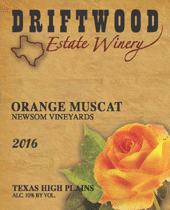 |
2016 Orange Muscat: 100% Texas grapes. Made with grapes from the Neal Newsom Vineyard this sweet wine has just 3% residual sugar. Ideal for pairing with spicy foods or enjoy by itself. Fresh citrus and orange blossom aromas with a touch of sweet ginger spice echoed by bright, sweet tropical fruit flavors. $20.00 |
| 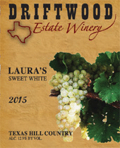 |
2015 Laura’s Sweet White: 100% Texas grapes.This slightly sweet wine is a blend of Viognier, Orange Muscat and Rousanne grapes. Flavors of Apple and Grapefruit. $20.00 |
| 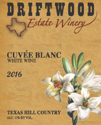 |
2016 Cuvee Blanc: 100% Texas grapes.This is an Estate Bottled wine made with Viognier, Chardonnay and Chenin Blanc grapes from our Estate Vineyard. Made in stainless steel tanks with no oak this wine has aromas and flavors of grapefruit, pineapple, pear and green apple. Enjoy with food or by itself. Sorry Sold Out |
| 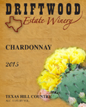 |
2015 Chardonnay: 100% Texas grapes.This dry white wine is made in the Chablis style, entirely in stainless steel tanks with no oak. This is an Estate Bottled wine made with 100% grapes form our Estate Vineyard. Flavors of pineapple.Silver Medal, Reserve Class Champion, Reserve Texas Class Champion, Houston International Wine Competition. Sorry Sold Out |
| 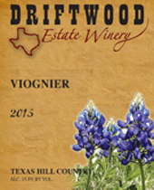 |
2015 Viognier: 100% Texas grapes.Double Gold Medal, Reserve Class Champion, Reserve Texas Class Champion, Houston International Wine Competition Sorry Sold Out |
| 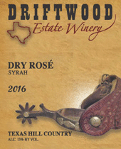 |
2016 Dry Rose: 100% Texas grapes. This wine is an Estate Bottled wine made with 100% Syrah grapes from our Estate Vineyard. The grapes were harvested and taken immediately to the winery where they were pressed off and fermentated without the skins to produce a beautiful rose’ color. With aromas and flavors of strawberry this wine can be paired with food or enjoyed by itself. Serve chilled. Silver Medal, Houston International Wine Competition. Sorry Sold Out |
| 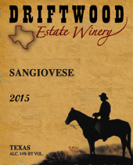 |
2015 Sangiovese: 100% Texas grapes. This Super Tuscan style wine is a blend of 75% Sangiovese and 10% Merlot, 10% Cabernet Sauvignon, 5% Malbec. Aromas and flavors of cherry, strawberry and raspberry. Soft silky tannins similar to a Chianti. A great pairing with Italian food. $30.00 |
| 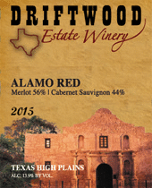 |
2015 Alamo Red: 100% Texas grapes, this Bordeaux blend of 56% Merlot and 44% Cabernet Sauvignon is full bodied with rich fruit flavors and soft smooth tannins. Barrel aged 18 months in French and American oak. The grapes are from the Newsom Vineyards in the Texas High Plains Appellation. $35.00 |
| 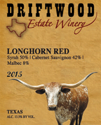 |
2015 Longhorn Red: 100% Texas grapes, This wine is made with 50% Syrah, 42% Cabernet Sauvignon and 8% Malbec. Aged 18 months in French and American oak barrels Longhorn Red is our flagship blend and the 2012 vintage won the saddle for "Top Texas Wine" in 2015 at the Houston International Wine Competition. This blend has been one of our most awarded and popular wines. $35.00 |
| 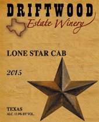 |
2015 Lone Star Cab: 100% Texas grapes. This Cabernet Sauvignon is a blend of grapes from our Hill Country Estate Vineyard and the Newsom Vineyard in Plains Texas. This wine was aged in French and American oak for 18 months. Available to Wine Club members only |
| 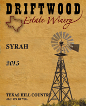 |
2015 Syrah: 100% Texas grapes. This wine is a blend of 75% Syrah, 15% Tempranillo and 10% Sangiovese. Aged in French and American oak for 18 months. $25.00 |
| 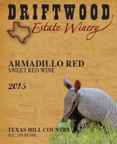 |
2015 Armadillo Red: 100% Texas grapes, this sweet red wine has aromas and flavors of black cherry. $20.00 |
| 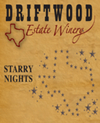 |
Starry Nights: Muscat Sparkling Wine. Semi sweet. Similar to a Proseco from Italy. $20.00 |
| 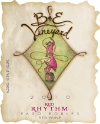 |
2012 B&E Red Rhythm: Ultimate Bordeaux-Rhone blend. 62% Merlot, 20% Cabernet Sauvignon, 18% Syrah. Aged in French oak for 24 months. this wine shows a soft, lush creaminess with plum, cherry, chocolate and smoky oak flavors. This is a Paso Robles wine. Gold Medal, Class Champion ~ California State Fair and “91” points from Frugal. $35.00 |